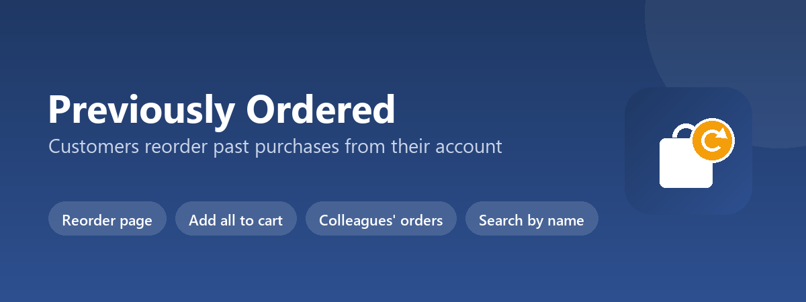

Adds a Previously Ordered page to the customer's online account, listing what they bought before with add to cart buttons.
Signed-in customers find a Previously Ordered page in their account on your website. It lists the products of their latest confirmed orders, most recent first, each with a quantity and an add to cart button. One more button puts the whole list in the cart, and checkout continues as usual.
📜 Order history pageA Previously Ordered page in the customer account, with its own card on the account home page. |
📦 All the detailsEach product shows its image, name, reference, variant, the date and quantity of the last order and how many times it was ordered. |
🛒 Add to cartEvery product has its own quantity and add to cart button, filled in with the quantity ordered last time. |
⚡ Add all at onceOne button puts the whole list in the cart with the quantities shown on the page. You can switch it off. |
🔍 Quick searchCustomers search their list by product name or reference. |
🏢 Made for business buyersOrders of the whole customer company are included, so a buyer also sees what colleagues ordered. |
Odoo 18.0 • Community & Enterprise • depends on eCommerce • Licence LGPL-3
Odoo implementation and development. thecodelegion.com